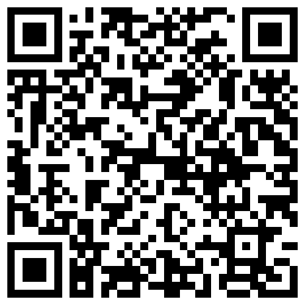

止血帶降位／轉換 與 鏟式擔架 ‧ 技術操作站
本站三大主題：止血帶降位／轉換、SMR 證據、鏟式擔架操作。完整摘要請下載：
看完情境後，先依決策流程在心裡（或實際操作）做出處置決定，再按「看答案」對照。
口訣 「酒到斷 So Good」 — 超時>6h、快到院、截肢、休克、顧不到；五項皆無才可轉換，只有黃燈（截肢／休克／顧不到）降位，有紅（超時）或藍（快到院）直送。
① 止血帶降位
② 止血帶轉換
③ 腋下出血
④ 頸部出血
⑤ 鏟式擔架操作示範
50 分鐘純技術操作站完整教案（含時間規劃、器材清單、分站流程、情境卡、同儕檢核表、鏟式器材介紹）。
提醒：此頁為公開頁面，教案含解答/計分，如不希望外流可改放精簡版。
請學員用手機相機掃描下方 QR code，即可開啟本頁（預設進入「學員」分頁）。

https://sharky83920-png.github.io/EMTP-retraining-tourniquet-and-scoop-stretcher/
用法：指導員用自己的手機開這一頁，舉起來讓學員掃即可。
學員可直接閱讀。管理者登入後可即時新增／刪除問答（任何裝置皆可，免重新部署）。
載入中…
載入中…